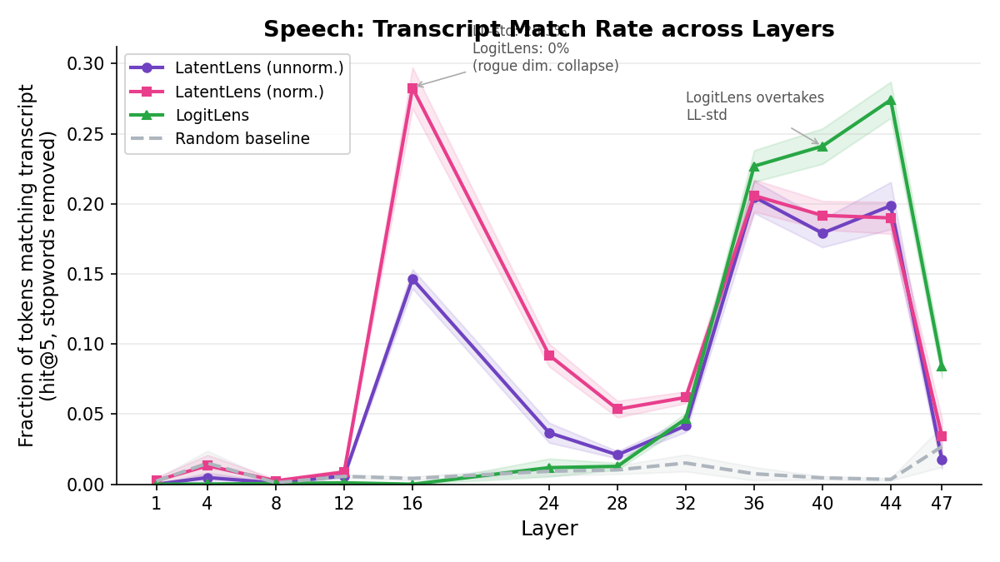
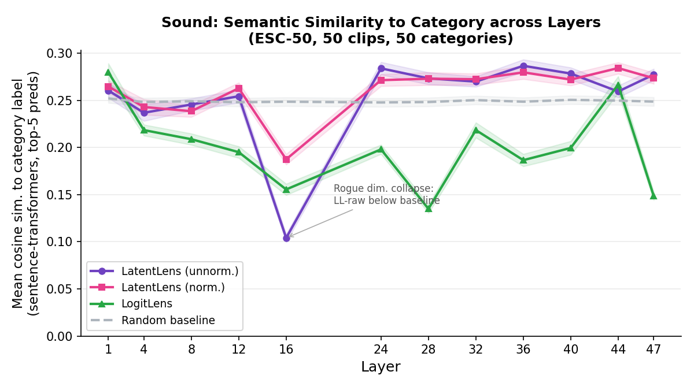

Gemma4-12B was released by Google a few weeks ago and it piqued my interest as an interp researcher since it diverges from the mainstream paradigm: it is an encoder-free vision-language model that processes image patches and audio segments directly as tokens, without a separate vision or audio encoder. This raises an interpretability question: what do those non-text tokens represent at each layer of the transformer?
We apply two complementary probes to every visual/audio token at every layer. LatentLens (Krojer et al., 2026; normalized) retrieves the nearest-neighbor tokens from a large caption corpus in the model's own representation space, after correcting for rogue dimensions via z-score standardization. I had developed this method recently (presenting at ICML in Seoul) and was curious how well it would work here. Interestingly, I had to add the normalization step to account for outlier dimensions that otherwise dominate cosine similarity. I also apply the more established LogitLens (nostalgebraist, 2020), which projects the raw hidden state through the unembedding matrix to return ranked vocabulary predictions. While LatentLens retrieves corpus tokens by similarity search, LogitLens reads off vocabulary logits directly; comparing both across layers reveals how the model processes non-text modalities.
We manually inspect a handful of PixMo-Cap examples, examining nearest-neighbor predictions for individual patches across layers 1–47.
| Layer range | LatentLens (norm.) | LogitLens | Key observation |
|---|---|---|---|
| 1–4 | nothing | nothing | High raw cosine similarity at L4 is a rogue-dimension artifact, not signal |
| 8 | OCR only | nothing | First interpretable signal, exclusively on image text |
| 12 | OCR + first semantics | nothing | Semantic (non-OCR) content begins appearing |
| 16 | ~50% patches interpretable | not inspected | Raw cosine similarities spike to >0.99 for LatentLens (unnorm.) — all corpus tokens look identically similar, so nearest neighbors are meaningless. LatentLens (norm.) is unaffected and peaks here. |
| 24–28 | mostly silent | silent | Both methods lose most signal; only a few OCR patches remain in LatentLens |
| 32 | OCR only | silent | OCR retrieval recovers in LatentLens; non-OCR still silent |
| 36 | partial, lower diversity | improving | Partial recovery in LatentLens, but less diverse — same few neighbors recur across patches of the same image |
| 40–44 | OCR competitive | leads on semantics; next-token on OCR | LogitLens overtakes LatentLens on general content; on OCR patches LogitLens predicts the next word in image text, not the current one |
| 47 | silent | slightly weaker than L44 | Both methods degrade; last layer optimized for next-token prediction, not patch decoding |
LatentLens (normalized) and LogitLens are complementary: LatentLens provides the main interpretable signal at layers 8–16, while LogitLens takes over at layers 40–44. Layers 24–32 are largely a dead zone for both. At layer 16, raw cosine similarities spike to >0.99 for the unnormalized case — every corpus token looks nearly identical to every query token, so nearest-neighbor retrieval is uninformative. Z-score normalization corrects this.
We probe 50 speech clips from LibriSpeech test-clean (3–14 seconds each, ~25 tokens/sec). Each 40ms audio token is inspected independently. We measure whether the top-5 predictions match words from the clip's transcript, using exact and stem matching after stopword removal.

LatentLens (normalized) peaks at 28.3% at layer 16, precisely where LogitLens predicts no transcript words at all (0% match rate) — mirroring the rogue-dimension effect seen in vision. LogitLens recovers and overtakes LatentLens at layers 36–44 (27.4%). The random cross-clip baseline stays at ~2–3% throughout, confirming the signal is genuine.
The two panels tell different stories. Absolute timing (left) is low: at the peak layer (L16), only 6.4% of tokens predict the word expected at that exact moment. Ordering (right) is substantially higher: when predictions do match transcript words, they tend to appear in the correct transcript sequence (Spearman ρ ≈ 0.78 at L16, 0.67–0.75 at L36–44).
In other words: at layer 16, the model has encoded much of the utterance's vocabulary in the correct sequence, but without precise temporal localization. The ordering finding is robust (n=47/50 clips) but not perfect — ρ of 0.78 means substantial ordering with real scatter.
We probe 50 environmental sound clips from ESC-50 (one per category, 5 seconds each). There is no transcript to match against; instead we measure semantic similarity between each top-5 prediction and the clip's category label (e.g. “crow”, “rain”) using sentence-transformer cosine similarity.

LatentLens (unnorm. and norm.) show a small but statistically significant advantage over the random baseline at layers 24–47 (max t ≈ 4.6 at L44, surviving Bonferroni correction). The effect is modest in absolute terms (~0.02–0.04 cosine similarity units above random); the predictions are not reliably interpretable as category labels by inspection. The most notable feature is the sharp dip at layer 16 for LatentLens (unnorm.), which drops well below baseline — the same L16 effect where raw cosine similarities spike and predictions become uninformative, also seen in vision and speech.
Three findings appear consistently across both modalities and both probe methods:
Code and data: probing scripts and result JSONs are available on request. The interactive demos below let you explore individual tokens at any layer.